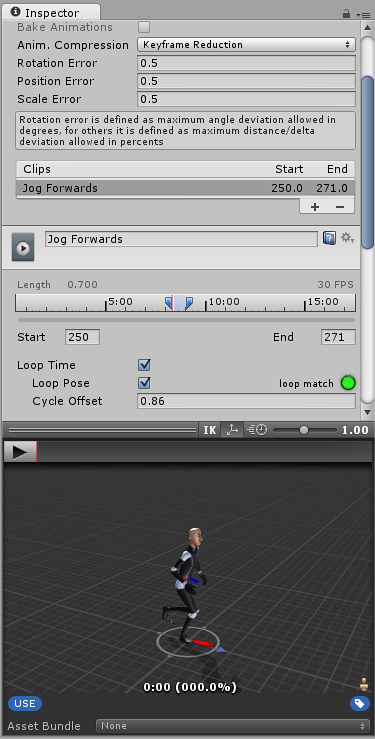
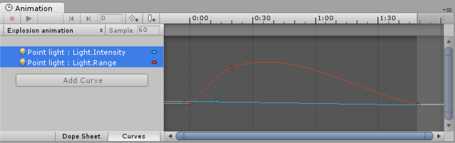

Thank you for helping us improve the quality of Unity Documentation. Although we cannot accept all submissions, we do read each suggested change from our users and will make updates where applicable.
For some reason your suggested change could not be submitted. Please try again in a few minutes. And thank you for taking the time to help us improve the quality of Unity Documentation.
Animation Clips are one of the core elements to Unity’s animation system. Unity supports importing animation from external sources, and offers the ability to create animation clips from scratch within the editor using the Animation window.
Animation from External Sources
Animation clips imported from external sources could include:
Humanoid animations captured at a motion capture studio
Animations created from scratch by an artist in an external 3D application (such as 3DS Max or Maya)
Animation sets from 3rd-party libraries (eg, from Unity’s asset store)
Multiple clips cut and sliced from a single imported timeline.

An example of an imported animation clip, viewed in Unity’s inspector window
Animation Created and Edited Within Unity
Unity’s Animation Window also allows you to create and edit animation clips. These clips can animate:
The position, rotation and scale of GameObjects
Component properties such as material colour, the intensity of a light, the volume of a sound
Properties within your own scripts including float, int, Vector and boolean variables
The timing of calling functions within your own scripts

An example of Unity’s Animation window being used to animate parameters of a component - in this case, the intensity and range of a point light